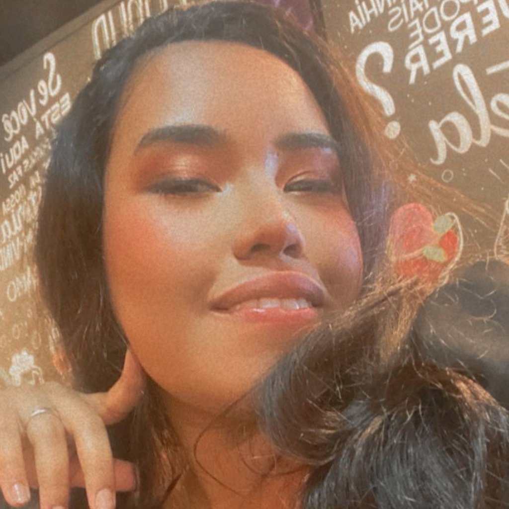
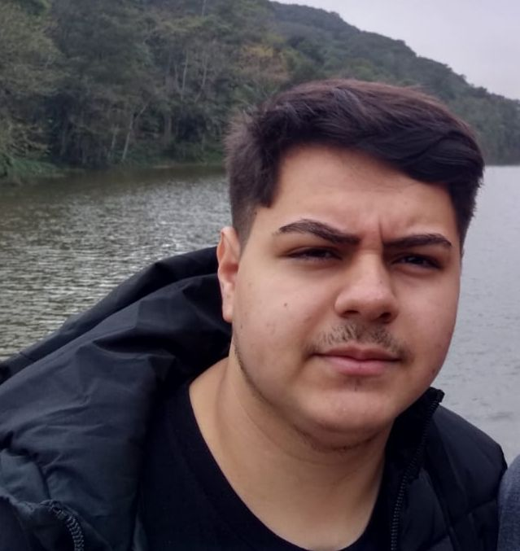

Somos um grupo que se juntou para desenvolver esse site como trabalho para a turma de Analise de Sistemas da faculdade Estacio de Sá.
Composto pelos integrantes:
Matheus Dias Lima
Meu nome é Matheus Dias Lima, tenho 18 anos e estou no segundo semestre do curso de ADS. Atualmente, estou trabalhando como vendedor no Grand Plaza Shopping, gosto de jogar videogame, ouvir música, assistir futebol e ler mangás. E fiquei responsavél pela parte do NORDESTE.
Suzana Dantas
Meu nome é Suzana Dantas, tenho 26 anos e estou no segundo semestre do curso de ADS. Não gosto de muita coisa, nem desgosto de muita também, acho que meu único traço marcante é estar sempre lendo ou vendo animes. E fiquei responsavél pela parte do CENTRO-OESTE, Galeria e o Quiz.
Kaike Roberto da Silva
Meu nome é Kaique Roberto da Silva, tenho 24 anos e estou no segundo semestre do curso de ADS. Atualmente não tenho emprego. Gosto de jogar, ver animes e estudar. E fiquei responsavél pela parte do NORTE.
Jackson Antonio Silva
Meu nome é Jackson Antonio Silva, tenho 19 anos e estou no segundo semestre do curso de ADS. Atualmente não tenho um emprego na área. Gosto de jogar, ir para a academia, jogar basquete, escutar música e ver animes. E fiquei responsavél pela parte do SUL, Layout e Design da Página, Responsividade, o JS do site, o Mapa Interativo e o Slideshow.
Pedro Henrique
Olá, sou o Pedro Henrique, tenho 20 anos e estou no segundo semestre do curso de Análise de Sistemas e Desenvolvimento na Estácio. Atualmente, trabalho como Coordenador de CPD na leitura. Tenho uma paixão especial pela programação front-end e pretendo seguir nessa área ao longo da minha carreira. Elaborei o planejamento do projeto e fui designado para conduzir a implementação da parte referente à região Sudeste do projeto.